Находит готовые сделки раньше большинства трейдеров и сразу показывает весь торговый план прямо на графике.
Для MetaTrader 5: фьючерсы, акции, Forex, металлы, криптовалюты, индексы.
ВАМ ЭТО ЗНАКОМО?
Вы открываете график и начинаете искать знакомый Вам торговый паттерн.
Сомневаетесь в разметке — её всегда можно нанести по-другому.
Рынок — сплошной хаос, Вы не понимаете его логику.
Входите в сделку и уже через минуту начинаете сомневаться.
Нервничаете в позиции и не знаете, когда её закрывать.
А после закрытия: «Надо было делать совсем по-другому…».
Или ещё хуже: «Нафига я вообще сюда входил?»
Больше времени уходит на поиск и сомнения,
чем на сам трейдинг.
Пока Вы проверяете один график, хорошие возможности появляются на десятках других.
Самое неприятное — когда движение прошло,
а паттерн уже очевиден.
Но входить уже поздно. Каждый пропущенный сигнал — это деньги, которые рынок был готов отдать. И чем больше активов Вы отслеживаете вручную, тем чаще это происходит.
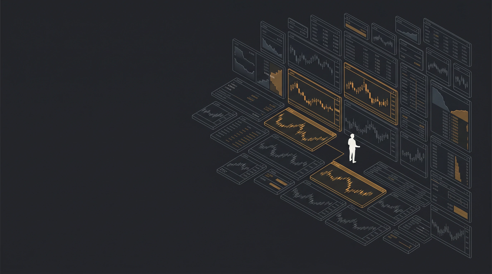
Большинство трейдеров делают вручную то,
что давно должна делать программа.
ЧТО МЕНЯЕТСЯ СРАЗУ ПОСЛЕ УСТАНОВКИ РАДАРА?
Радар Вульфа превращает график актива в источник профита.
{kind=link}
{kind=link}
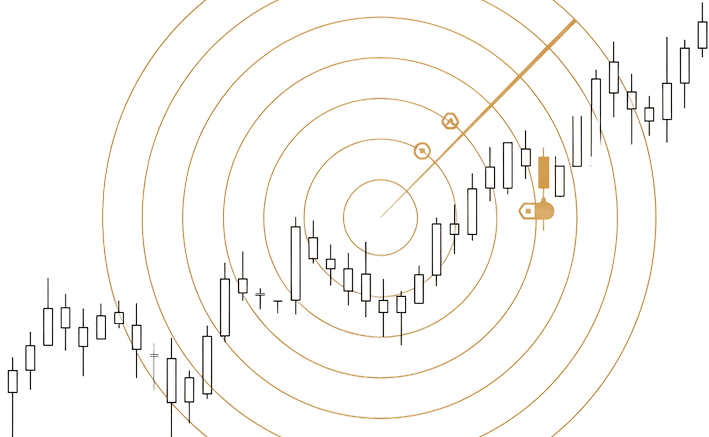
Представьте обычный торговый день.
Пока большинство вручную листают графики и спорят с разметкой, Радар уже:
Вам остаётся только принять решение.
ЧТО ТАКОЕ ВОЛНЫ ВУЛЬФА?
Волны Вульфа — редкий паттерн, который превращает хаос графика в геометрию сделки.
Это модель из 5 точек, которая показывает, где искать вход, где защищать сделку и куда цена может дойти.
Метод связывают с трейдером Биллом Вульфом. Его не изобрели, а обнаружили: цена движется волнами спроса и предложения, выходит из баланса и стремится вернуться к равновесию.
Главное преимущество Волн Вульфа — они дают сделке понятную геометрию. Они показывают конкретно:
Волны Вульфа особенно ценят профессиональные трейдеры.
Правильно увидеть такой паттерн на живом графике непросто. Это похоже на 3D-картинку: сначала видишь только шум, а потом вдруг проступает четкая фигура сделки.
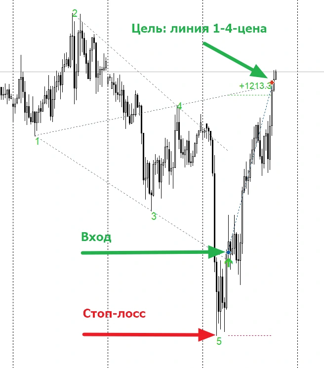
Именно поэтому Волны Вульфа долго оставались инструментом только для очень опытных трейдеров: нужно было уметь находить 5 ключевых точек, понимать геометрию движения, не путать настоящий паттерн с похожими случайными линиями и вовремя увидеть момент формирования точки входа.
Почему этот паттерн так интересен для торговли?
Не Эллиотт и не волновая теория.
Волны Вульфа — это графический паттерн из 5 точек, он не имеет отношения к волновому анализу.
Даёт не только направление, но и цель.
У сделки появляется расчетная цель, а не просто ожидание «куда-нибудь вверх» или «куда-нибудь вниз».
Помогает увидеть разворот раньше толпы.
Там, где большинство видит пробой, Волны Вульфа показывают точку возврата.
Подходит для разных рынков.
Паттерн работает на фьючерсах МосБиржи, акциях, Forex, металлах, криптовалютах, индексах, на таймфреймах от М1 до D1.
Это редкая торговая ситуация, но когда она появляется, опытные трейдеры всегда ликуют. Хорошие Волны Вульфа не появляются каждую минуту. Именно поэтому они ценны: это не шум, а осмысленная геометрия рынка, которая отлично отрабатывает в торговле.
Главная фишка Волн Вульфа – паттерн показывает не только точку входа и уровень стоп-лосса, он показывает еще и расчетную цель – куда придет рынок.
И еще более редкая фишка! Этот паттерн показывает не только «куда» дойдет цена, но и «примерно когда».
У Вас появляется еще и ориентир по времени.
ГЛАВНАЯ БОЛЬ ВОЛН ВУЛЬФА
Волны Вульфа сильны. Но руками их легко нарисовать неправильно.
Чтобы правильно разглядеть паттерн на графике, нужны годы опыта и насмотренности.
В этом и главная боль метода: Волны Вульфа работают, но находить их на графике невероятно сложно. Для трейдеров-новичков это сущий ад.
Именно поэтому большинство людей так и не начинают использовать Волны Вульфа на практике. Не потому, что паттерн плохой. А потому что между теорией и реальной торговлей слишком большая пропасть.
Радар Вульфа эту пропасть убирает.
Почему ручная разметка мешает зарабатывать:
легко ошибиться с точками;
легко увидеть паттерн там, где его нет;
одну и ту же ситуацию можно разметить по-разному;
сложно быстро проверить десятки активов и таймфреймов, где сейчас может формироваться волна;
невозможно постоянно отслеживать формирование точки входа;
хорошие паттерны редкие, поэтому их легко пропустить;
чем больше ручной работы, тем больше сомнений перед сделкой.
В Рунете сейчас это популярная торговая стратегия. Трейдерские школы кругом учат вручную искать Волны Вульфа.
Как правило, за большие деньги Вы получите большой подробный видеокурс, возможно, даже покажут, как их искать на реальном рынке.
Но знать метод — не значит быстро видеть его на десятках инструментов в реальном времени.
Одно дело – щелкать вручную графики, пытаться глазами разглядеть 5 точек для построения линий Вульфа, нервничать, ждать, перелистывать активы по кругу… Много денег Вы в таком режиме наторгуете?
И другое дело – с помощью Радара Вульфа точно знать, где прямо сейчас формируется паттерн, даже не открывая график актива.
Самая сложная и утомительная часть метода Билла Вульфа теперь работает на автомате:
поиск паттерна, построение линий, проверка геометрии, визуализация входа, стопа и цели прямо на графике.
Раньше геометрию Волн Вульфа нужно было видеть глазами опытного трейдера.
Теперь она появляется на графике автоматически.
РАДАР ВУЛЬФА
Радар Вульфа проведёт Вас за руку по всем шагам прибыльной сделки.
сам находит и рисует Волны Вульфа.
сразу показывает вход, стоп, цель и выход по времени.
прямо на графике: как стратегия работала за предыдущий период на этом активе.
рассчитывает объем позиции под заданный риск.
в реальном времени мониторит до 100 активов и таймфреймов.
предупреждают, когда паттерн формируется и когда пора готовиться ко входу.
помогает собрать набор лучших инструментов и отслеживать на них появление паттерна.
И всё это — прямо на одном графике.
{kind=link}
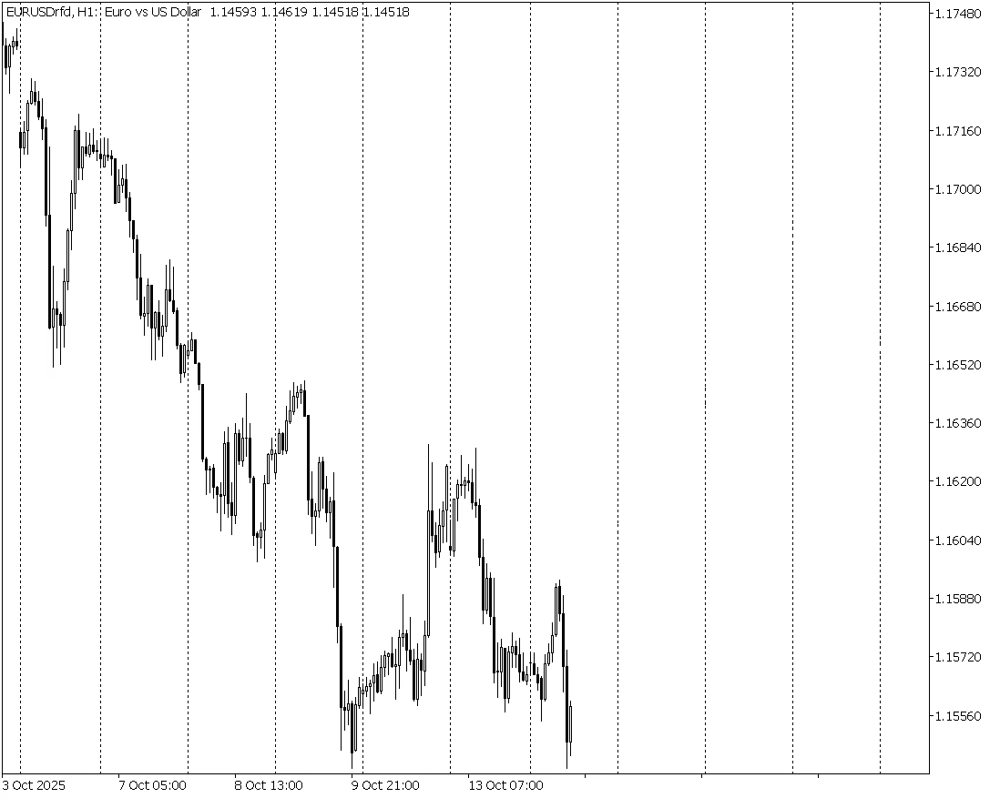
{kind=link}
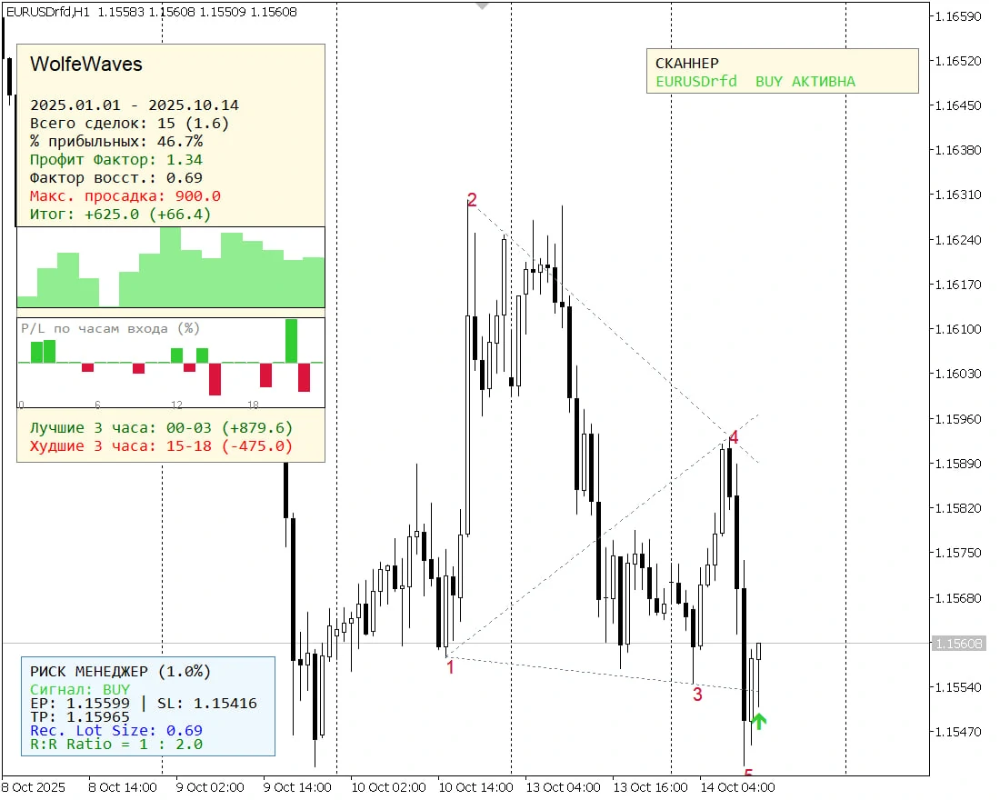
{kind=link}
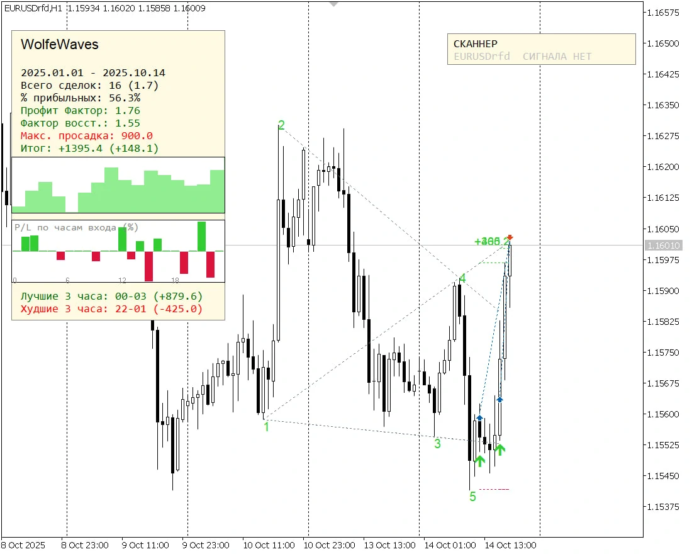
{kind=link}
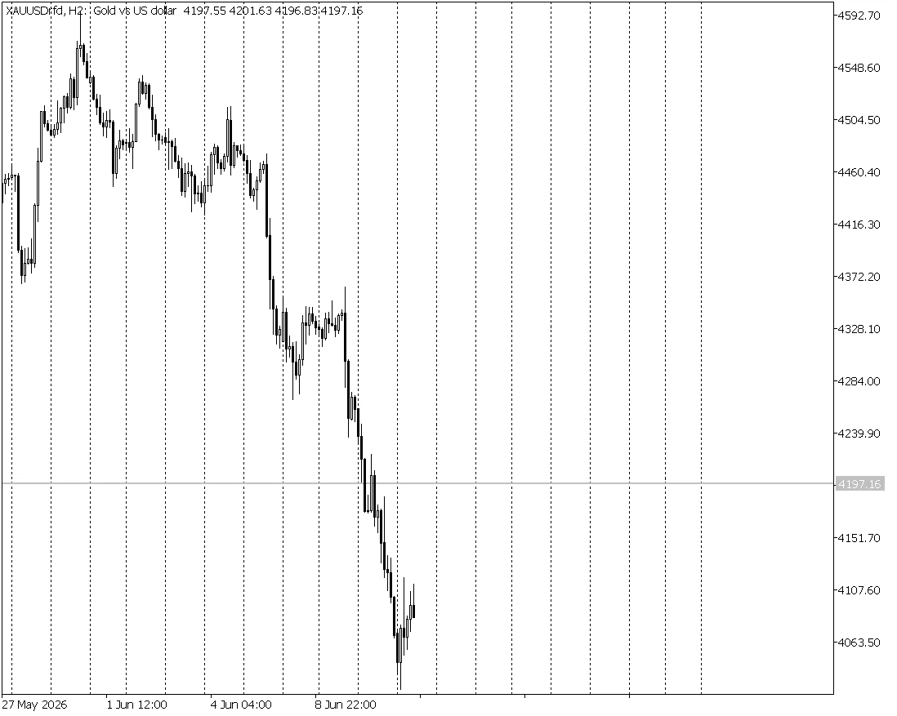
{kind=link}
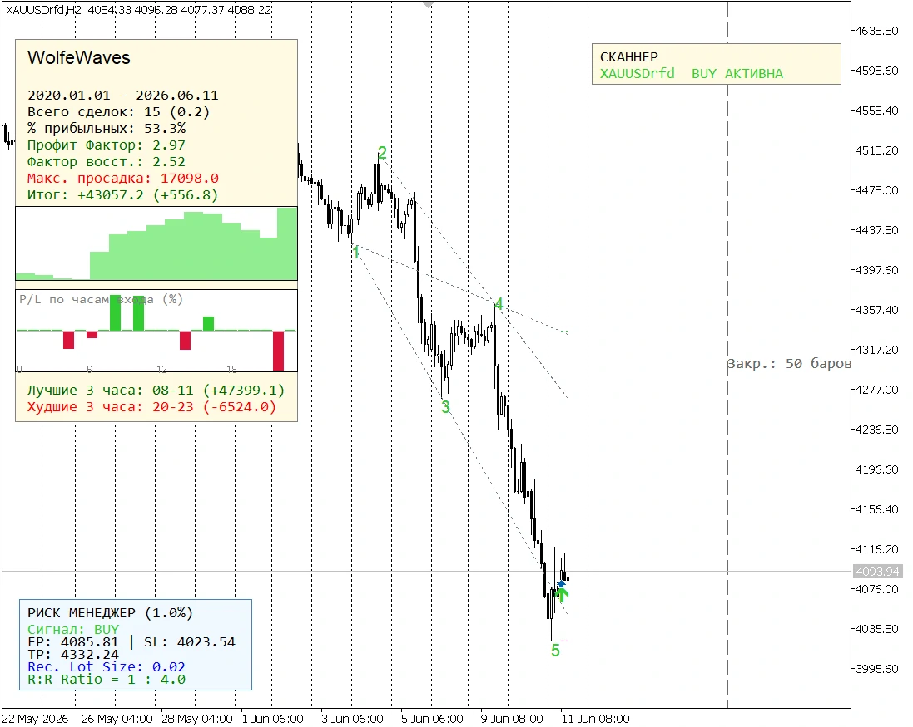
{kind=link}
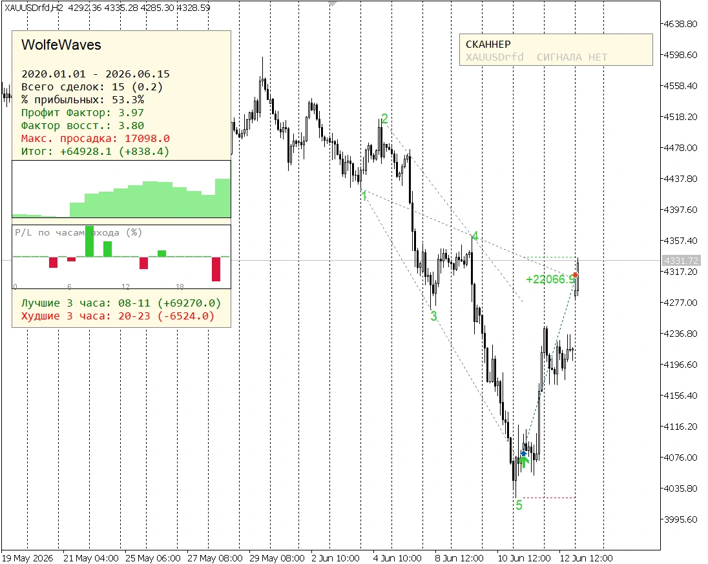
{kind=link}
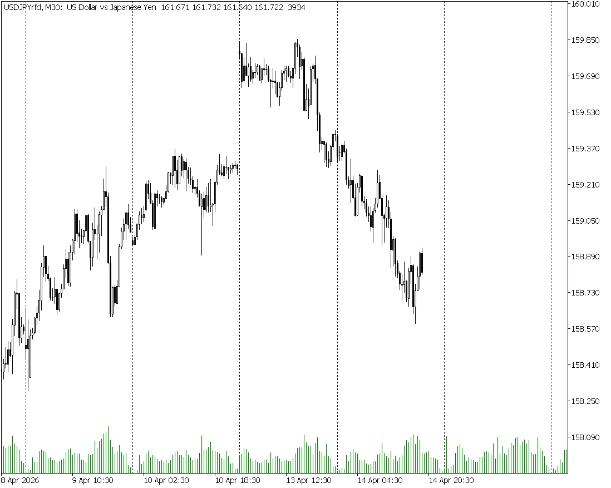
{kind=link}
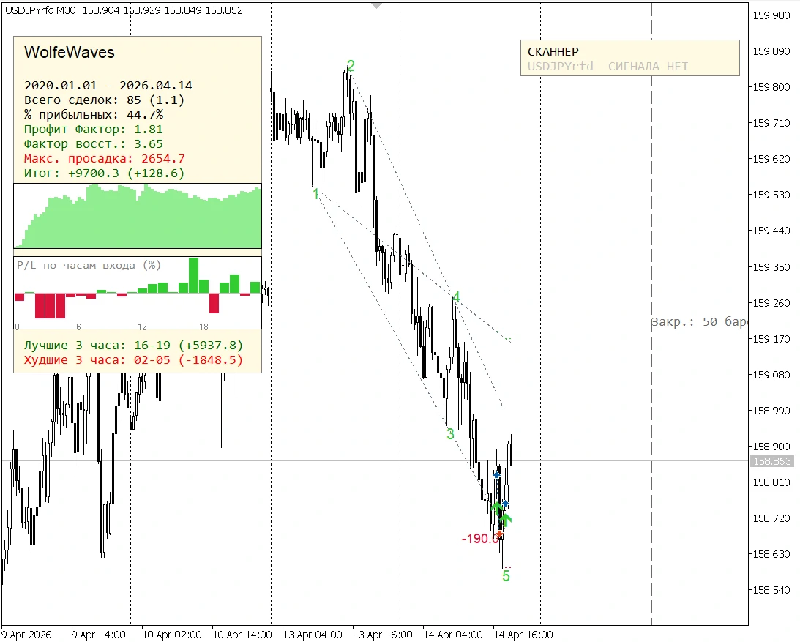
{kind=link}
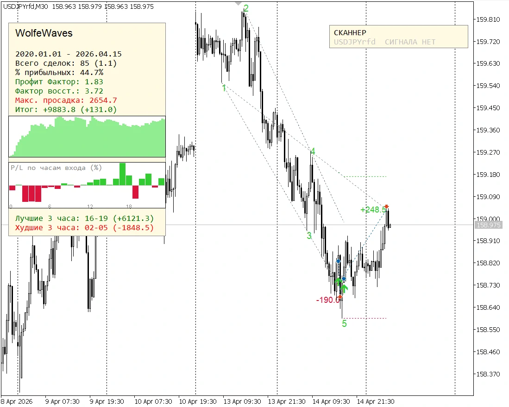
{kind=link}
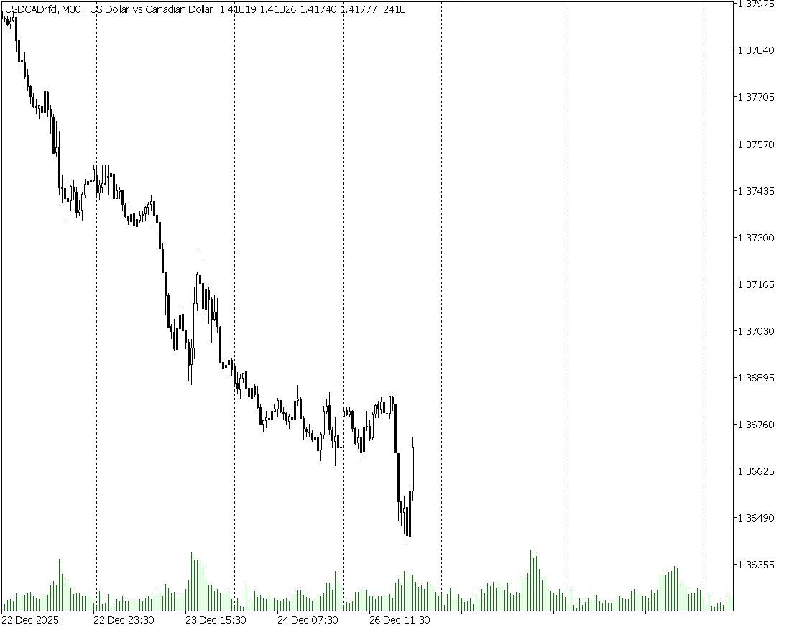
{kind=link}
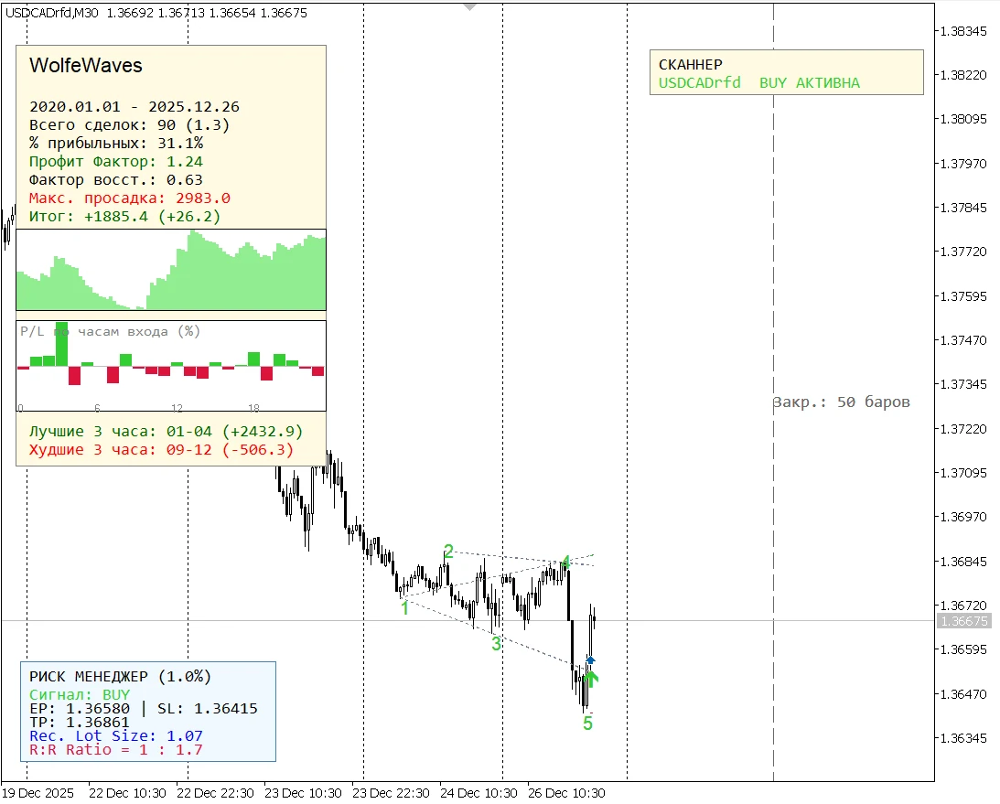
{kind=link}
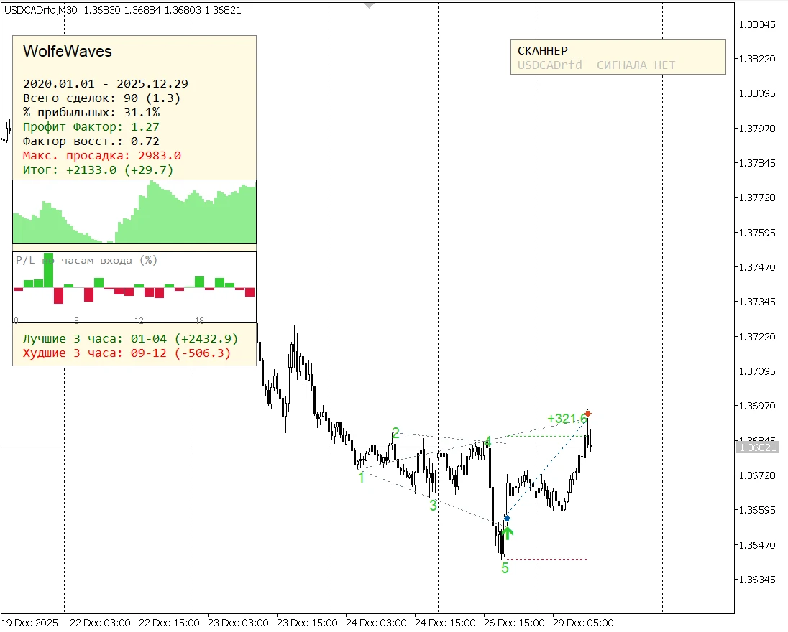
Профессиональный трейдинг никогда ещё не становился настолько лёгкой задачей!
Получить торговую систему→КАК ЭТО РАБОТАЕТ ЗА 5 СЕКУНД
Все действительно очень просто.
Вот и все. Не нужно вручную искать точки, чертить линии и гадать, стоит ли вообще входить в сделку. Это действительно просто. Вы легко справитесь.
Вот так выглядят реальные сделки с помощью Радара Вульфа.
Прямо на графике появляется все, чтобы забирать профит.
{kind=link}
{kind=link}
{kind=link}
{kind=link}
{kind=link}
{kind=link}
{kind=link}
{kind=link}
{kind=link}
{kind=link}
{kind=link}
{kind=link}
{kind=link}
{kind=link}
{kind=link}
{kind=link}
{kind=link}
{kind=link}
{kind=link}
{kind=link}
{kind=link}
{kind=link}
{kind=link}
{kind=link}
ВХОД, СТОП, ЦЕЛЬ, ВРЕМЯ, РИСК И СТАТИСТИКА — СРАЗУ НА ГРАФИКЕ
Радар Вульфа показывает весь маршрут сделки прямо на экране терминала. Вы сразу видите:
Точка входа
где покупать / продавать
Стоп-лосс
где защищать капитал
Цель по цене
куда может дойти рынок
Цель по времени
когда движение должно развиться
Потенциал сделки
стоит ли вообще рассматривать вход
Объём позиции
каким лотом входить под Ваш риск-менеджмент
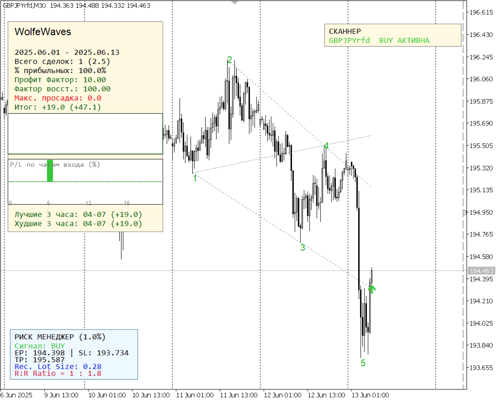
График превращается в торговый план. Вы не додумываете сделку после сигнала индикатора — Вы сразу видите, как ее отработать. Входите и забираете деньги:
КАК УДОСТОВЕРИТЬСЯ, ЧТО ЭТО РАБОТАЕТ И ПРИНОСИТ ДЕНЬГИ?
Просто перетащите Радар Вульфа на график, и Вы сразу увидите, как Волны Вульфа появлялись и отрабатывали на этом активе раньше. Проверьте за мгновение, зарабатывала ли стратегия в этом/прошлом году. Радар Вульфа показывает статистику прямо на графике. Вы сразу понимаете: стоит этот актив и таймфрейм Вашего внимания или нет.
Уверенность в трейдинге появляется из скорости проверки.
Радар Вульфа показывает, как ведёт себя стратегия в реальной торговле. В статистике учитываются:
Визуальная отработка паттернов
Где-то Волны Вульфа работают лучше, где-то хуже. Но главное — они работают на всех рынках.
{kind=link}
{kind=link}
{kind=link}
{kind=link}
{kind=link}
{kind=link}
{kind=link}
{kind=link}
Это показывает надежность не только Радара, как инструмента, но и самого метода торговли по Волнам Вульфа.
Видеоролики: реальная торговля
Реальная торговля с Радаром Вульфа в Альфа-Форексе
Тестируем Волны Вульфа на 5-минутках фьючерса на доллар/рубль в Финаме
Волны Вульфа на 15-минутках Сбербанка
Работают ли Волны Вульфа на криптовалютах?
Как ведет себя Радар Вульфа на золоте в 2026 году?
USD/JPY на Forex – реальные сделки 2026 года
НЕ ЖДИТЕ ОДНУ СДЕЛКУ — СКАНИРУЙТЕ РЫНОК РАДАРОМ
Хорошие Волны Вульфа — редкие. Если сидеть на одном активе и ждать идеальный паттерн, можно пропустить массу возможностей на других инструментах.
Радар Вульфа решает эту проблему.
Он в реальном времени отслеживает до 100 инструментов, чтобы не упустить момент появления понятной геометрии сделки.
Вы можете даже не открывать другие графики. Вся карта торговых возможностей у Вас перед глазами.
Что делает сканер:
Не нужно открывать 20 графиков и щёлкать их по кругу.
Радар покажет, где сейчас формируется паттерн, где уже есть ситуация и какие инструменты заслуживают внимания.
Смотрите, как работает сканер Волн Вульфа в реальной торговле:
Сканер Волн Вульфа в реальной торговле:
Радар предупреждает заранее, но не гонит в каждую сделку
Хорошая сделка не появляется внезапно. Сначала паттерн начинает формироваться. Потом подтверждается. И только после этого появляется понятная ситуация для входа в сделку. Радар Вульфа следит за этим процессом в реальном времени и заранее сообщает, где на рынке может появиться точка входа.
Вы получаете уведомления:
О формировании потенциального паттерна
О появлении точки входа
Уведомления могут приходить в Telegram, на email или через push.
Важный момент: Радар не заставляет входить в каждый намек на волну.
Формирующийся паттерн может появиться, а потом исчезнуть — и это нормально. Если структура паттерна не подтверждается графиком цены, система просто снимает такой паттерн с внимания. Это не ошибка. Это фильтр от лишнего шума.
После того, как Вы получили уведомление о том, что формируется паттерн, возможны 2 сценария:
формируется паттерн → подтверждается → вход в сделку
формируется паттерн → не подтверждается → сигнал снимается
Не каждый набросок волны становится сделкой. И это важное преимущество перед ручной разметкой. Принимая решения вручную, увидев начало формирования паттерна, Вы его уже не развидите, даже если рынок его не подтвердит. Радар Вульфа помогает Вам заранее подготовиться ко входу и отсеять кривые торговые ситуации.
И не втянет Вас в лишние сделки.
ПОРТФЕЛЬ ВОЛН ВУЛЬФА
Пока одна стратегия молчит, портфель продолжает искать прибыль.
Волны Вульфа — редкий эксклюзивный паттерн.
Хорошие торговые ситуации не обязаны появляться каждый день на одном инструменте. И это не недостаток. Это как раз признак качественной геометрии рынка.
Если торговать только один актив и один таймфрейм, сделки будут редкими. Иногда это 1–3 сделки в месяц, а иногда и меньше.
Профессиональный подход — не сидеть на одном графике в ожидании сигнала, а собирать портфель инструментов и таймфреймов.
Как это выглядит на практике:
инструмент = редкие сигналы
инструментов = поток возможностей
Если у Вас один инструмент — Вы зависите от одного графика. Если у Вас портфель из 20 инструментов, Вы уже можете получать 20–60 потенциальных сигналов в месяц.
Именно здесь сканер превращает Радар Вульфа в настоящий центр управления портфелем. Вы можете:
Соберите портфель из нескольких активов и сразу оцените статистику всего портфеля.
За год портфель из 10 активов заработал в 4 раза больше, чем была максимальная просадка.
Один сигнал — не грааль. Грааль начинается там, где у Вас есть портфель стратегий.
Вы больше не зависите от одного актива, одного таймфрейма и одной случайной сделки. Пока одна стратегия молчит, другие продолжают искать прибыль.
С портфелем активов чаще попадаются сделки, которые хочется сохранить на доску почета.
Например, когда одна сделка дает сразу 3 возможности для входа и тройную прибыль:
Или, когда Вы получаете 5 прибыльных сделок подряд на одном инструменте:
С портфелем чаще попадаются сделки на доску почёта — тройной вход и тройная прибыль или 5 прибыльных сделок подряд:
ПОЧЕМУ РАДАР НЕ ЛОМАЕТСЯ, КАК ОБЫЧНАЯ «КНОПКА»?
Завязана на один сигнал, один график, один режим рынка и надежду, что так будет всегда.
Но рынок меняется. Готова ли Ваша стратегия к завтрашнему рынку?
Быстро проверить рынок, отобрать сильные инструменты, заменить слабые и держать портфель в форме.
Скорость поиска и проверки превращается в уверенность: Вы решаете на основе фактов, а не эмоций.
КАК ВСТРОИТЬ РАДАР В МОЙ ТРЕЙДИНГ?
Быстрое исследование рынков
Радар Вульфа превращает MetaTrader 5 в исследовательскую лабораторию Волн Вульфа. Вы можете:
- быстро проверять любые активы;
- менять таймфреймы от М1 до D1;
- находить самые прибыльные рынки для заработка;
- за секунду получать статистику на любом активе;
- формировать портфели;
- собирать коллекцию стратегий под свой стиль торговли.
Не нужно спорить, где Волны Вульфа работают лучше.
Исследуйте. Поставили Радар на график — и сразу увидели статистику, сделки, просадку, доходность и качество отработки паттернов.
Визуализация и обучение
Радар поможет быстрее разобраться в логике Волн Вульфа.
Вы можете проматывать график или запускать визуальную демонстрацию торговли на истории и смотреть, как формируется паттерн, как стратегия ведет себя в реальной торговле.
Это буквально загружает в мозг живую механику паттерна. Вы видите, как Волны Вульфа отрабатывают на реальном графике и прокачиваете свою насмотренность.
Торговля вручную с помощью советника
Это режим: увидел сигнал → поставил отложку → ушел.
Радар показывает Вам весь торговый план. Вы сами принимаете решение, вручную ставите отложенные ордера на вход и выход из сделки.
Режим 4. Автоматическая торговля
Когда Вы готовы подключить робота, Радар может работать в автоматическом режиме.
Создается идеальная пара для трейдинга: Радар + Робот
Радар находит торговую ситуацию
Робот открывает и закрывает сделку по заданным правилам
Радар думает, как аналитик
Робот действует, как дисциплинированный коллега-трейдер
Робот не устает. Не сомневается. Не передвигает стоп «на всякий случай». Не входит потому, что «очень хочется». Он просто выполняет правила.
Сегодня Вы хотите торговать исключительно вручную, на конкретном рынке?
Завтра Вы захотите исследовать новые рынки?
Через месяц Вам захочется поставить торговлю на автомат?
Радар Вульфа будет полезен в каждом из этих сценариев.
ТОРГОВЛЯ ПОД ВАШЕ РАСПИСАНИЕ
Трейдинг не должен ломать Ваш день. У Вас есть только 2–3 часа утром или вечером? Вы не можете сидеть у графика весь день, но и полностью доверять торговлю роботу пока не готовы?
Радар Вульфа поможет проверить, какие инструменты и таймфреймы дают результат именно в это время.
Настройте удобное время анализа.
Ищите сделки утром, днем, вечером, в конкретный промежуток времени.
Проверьте, как паттерн отрабатывал в Вашем временном режиме.
Получайте уведомления и подключайтесь только когда есть повод.
Торгуйте в удобное время, не превращая рынок в круглосуточную вахту.
Вы не подстраиваете жизнь под рынок. Вы проверяете, где рынок может работать под Ваше расписание.
Где можно использовать Радар?
Везде, где есть MetaTrader 5.
Логика Волн Вульфа не привязана к одному рынку. Радар Вульфа можно использовать на разных инструментах, рынках и таймфреймах — главное, чтобы у Вас был доступ к терминалу MetaTrader 5.
Радар работает на:
Таймфреймы — от М1 до D1.
Можно использовать Радар для внутридневной торговли, среднесрочных сделок, исследования рынков, сканирования широкого рынка.
Одна логика. Разные рынки. Разные инструменты. Разные стили торговли.
Что нужно технически?
Терминал MetaTrader 5. В России этот терминал можно получить у брокеров:
За пределами России — подойдет любой брокер, у которого есть MetaTrader 5 и нужные Вам инструменты.
КТО ПОЛУЧИТ МАКСИМАЛЬНУЮ ПОЛЬЗУ УЖЕ В ПЕРВЫЕ НЕДЕЛИ?
Тот, кто хочет зарабатывать просто, легко и системно
Радар Вульфа подойдет Вам, если Вы хотите не просто смотреть на график, а видеть понятные торговые ситуации, проверять их статистикой и принимать решения по готовому плану.
Монетизируйте свободное время
У Вас есть час утром, вечер после работы или несколько свободных промежутков в течение дня? Радар помогает использовать это время с пользой:
- быстро проверить рынок;
- найти понятную торговую ситуацию;
- забрать профит.
Радар Вульфа — гибкий инструмент, который уже в первую неделю выведет Ваш трейдинг на новый уровень.
Я алготрейдер и управляющий, в трейдинге с 2003 года. И у меня есть принцип: я ненавижу сложность. Я убежден: доход в трейдинге должен приходить комфортно — без паники, без бессмысленных часов у монитора и без постоянного ощущения, что рынок вот-вот накажет.
Поэтому в моих продуктах всегда на первом месте три вещи:
Именно с этими постулатами создавался Радар Вульфа.
Это не очередной «черный ящик», где Вы не понимаете, что происходит внутри. Это инструмент, который автоматизирует поиск редкого профессионального паттерна, упрощает торговлю по Волнам Вульфа и позволяет быть уверенным в надежности этого дохода.
Разработал технологии для упрощения автотрейдинга:
Согласно опросу, 80% учеников заявили, что бросили бы трейдинг, если бы не получили доступ к одной из этих технологий.
В кризисном 2014 году установил личный рекорд доходности в автоматическом трейдинге: +253% прибыли к депозиту.
Мои ученики профессионально управляют капиталом инвесторов.
11 лет руководил офисом Альпари в Екатеринбурге и знаю индустрию трейдинга изнутри: со стороны трейдеров, брокеров, управляющих и разработчиков торговых систем.
Учился у лучших мировых алготрейдеров:
Мой принцип — убрать «черный ящик» и дать трейдеру контроль: понятные правила, быстрое тестирование, гибкость настроек и возможность управлять портфелем, а не зависеть от одного сигнала.
Радар Вульфа продолжает эту философию.
Он берет ценный паттерн, который руками сложно искать и размечать, и превращает его в понятный торговый процесс: от поиска сигнала до получения профита.
Ваша задача — жить. Задача торговой системы — искать возможности и приносить Вам прибыль.
{kind=link}
{kind=link}
{kind=link}
{kind=link}
{kind=link}
{kind=link}
{kind=link}
{kind=link}
ЧТО ВХОДИТ В КОМПЛЕКТ РАДАРА ВУЛЬФА?
- автоматическая разметка Волн Вульфа;
- сканер рынка до 100 графиков;
- визуальный тестер;
- статистика стратегии прямо на графике;
- риск-менеджер для расчета объема позиции;
- уведомления о формировании паттернов и точках входа;
Чтобы Вы быстро разобрались с системой, в комплект входит видеокурс по установке, настройке и практическому использованию Радара Вульфа.
Главная задача видеокурса — чтобы Вы по шагам прошли весь путь: от первого запуска и проверки стратегии до портфеля, уведомлений и реальной торговли.
Это 6 онлайн-занятий с Владимиром Чаминым, где мы будем практически разбирать рынки, инструменты, таймфреймы и стратегии. Пару занятий мы посвятим продвинутым нюансам работы с Радаром Вульфа и созданию устойчивых портфелей, для надежного заработка.
Мастер-группа – это практическая лаборатория, где Вы вместе с автором системы учитесь искать самые интересные возможности и исследовать новые рынки.
Главный формат остальных занятий — стратегические хакатоны, на которых мы будем:
- брать рынки и активы, которые Вам интересны;
- исследовать их с помощью Радара, прогонять на разных таймфреймах;
- искать самые сильные связки;
- детально анализировать статистику;
- отбирать самые сильные активы/таймфреймы, помечать слабые варианты, на которых торговать не стоит;
- собирать портфели для разных рынков и брокеров;
- разбирать реальные счета и реальные торговые ситуации;
- анализировать торговлю стратегий и корректировать результаты.
Вы же планируете зарабатывать трейдингом не один год? Вопрос из реальной торговли может возникнуть у Вас и через 2 года трейдинга с Радаром.
Поэтому в комплект входит поддержка лично от Владимира Чамина на весь срок лицензии на Радар Вульфа!
Сам Радар – технологичный инструмент. Вам может понадобиться техническая помощь.
В технических моментах Вам может помочь Служба Заботы Инфоклуба.
ЧТО ВЫ НА САМОМ ДЕЛЕ ПРИОБРЕТАЕТЕ ВМЕСТЕ С РАДАРОМ ВУЛЬФА?
Большинство трейдеров приходят на рынок за свободой и дополнительным доходом. А получают совсем другое:
РАДАР ВУЛЬФА СОЗДАН ДЛЯ ТОГО, ЧТОБЫ УБРАТЬ ЭТИ ПРОБЛЕМЫ ИЗ ТРЕЙДИНГА
Готовую систему торговли по Волнам Вульфа
Не нужно самостоятельно изучать сложную разметку паттерна и годами нарабатывать насмотренность. Радар сам найдёт и покажет торговую ситуацию.
Готовый торговый план по каждой сделке
Все ключевые точки появляются прямо на графике.
Уверенность перед входом в сделку
Вы можете за секунды проверить статистику стратегии на любом активе и таймфрейме, прежде чем рисковать деньгами.
Экономию огромного количества времени
Не нужно вручную открывать десятки графиков, искать точки и строить линии. Радар делает это автоматически.
Защиту от большинства типичных ошибок трейдера
Ошибки в разметке, эмоциональные входы, отсутствие стопа, торговля «на глаз», попытки угадать рынок — всё это становится значительно менее вероятным.
Меньше решений — меньше ошибок
Внимание — ресурс психики человека, он имеет свойство заканчиваться. Радар защищает Вас от когнитивных ошибок, забирая на себя рутинные процессы.
Возможность торговать тогда, когда удобно Вам
Утром, вечером, несколько часов после работы или в свободные промежутки дня.
Постоянный поток торговых возможностей
Вместо ожидания сигнала на одном графике Вы наблюдаете сразу целый список активов через сканер и портфель инструментов.
Возможность быстро находить лучшие активы и таймфреймы
Вы не привязываетесь к одному инструменту. Радар помогает искать там, где сейчас есть наиболее интересные возможности.
Гибкость в работе
Можно торговать вручную, использовать уведомления и отложенные ордера или полностью автоматизировать исполнение через робота.
Один инструмент для разных рынков
Forex, золото, серебро, криптовалюты, акции, индексы, российские и американские фьючерсы и т.д.
Быстрый старт даже без опыта в трейдинге
Если Вы новичок, Радар покажет, где искать вход, где ставить стоп и где фиксировать прибыль.
Поддержку и обучение
Вы получаете не просто программу, а готовую систему внедрения Радара Вульфа в свой трейдинг.
Радар Вульфа экономит не только деньги, но и годы обучения.
То, что раньше требовало опыта, насмотренности и постоянной ручной работы, теперь доступно через готовую систему поиска и сопровождения сделок.
Уже через неделю использования Радара Ваш трейдинг перейдёт на качественно новый уровень. Вы перестанете тратить часы на то, что программа умеет делать за секунды.
Сегодня у Вас есть возможность начать торговать по одному из самых интересных разворотных паттернов рынка. Вы уже понимаете, что получите. Осталось выбрать формат доступа и начать пользоваться Радаром Вульфа уже сегодня.
Всего один шаг. Радар может стать Вашим через секунды… ↓↓↓
ДО ПОЛУЧЕНИЯ РАДАРА ОСТАЛОСЬ НЕСКОЛЬКО СЕКУНД
Введите Ваши данные, чтобы выбрать подходящий вариант доступа, и начните использовать Радар Вульфа уже сегодня.
ЕСТЬ ВОПРОСЫ? РАЗБЕРЁМ ЧАСТЫЕ
Нет. Именно для этого создан Радар. Он самостоятельно находит паттерн, чертит линии и показывает готовый торговый план прямо на графике.
Да. Радар показывает вход, стоп, цель, время выхода и риск прямо на графике. Плюс пошаговое обучение, поддержка и тест на демо.
Нет. Робот — опция отдельно. Сам Радар подходит для ручной торговли, с неё начинают большинство.
Да. Демо-счёт, тесты на истории, изучение статистики и визуальная отработка до реальной торговли.
Встроены статистика, тестирование и портфельный подход: быстро проверяете другие рынки и адаптируете портфель.
Столько, сколько удобно. Кто-то торгует пару часов, кто-то проверяет утром и вечером, кто-то по уведомлениям.
Радар показывает весь процесс: паттерн, вход, стоп, цель, время, риск, объём, статистику и другие активы с возможностями. Это система принятия решений, а не отдельный сигнал.
Нет. Сканер мониторит до 100 активов и пришлёт уведомление, когда появится паттерн или вход.
В комплекте поддержка на весь срок лицензии: Владимир Чамин и Служба Заботы Инфоклуба.
Я вообще не понимаю, подойдет ли мне этот стиль торговли.
Как мне разобраться, с моими личными вопросами по Радару Вульфа?
Получите бесплатную консультацию специалиста Инфоклуба
Мы свяжемся с Вами голосом, ответим на любые вопросы, поможем разобраться в возможностях Радара Вульфа и подскажем, подойдет ли этот инструмент именно под Ваши цели, опыт и стиль торговли.
Для этого просто оставьте свои контактные данные и дождитесь звонка специалиста.
ТРЕЙДИНГ ДАВНО ИЗМЕНИЛСЯ.
МЕНЯЕТСЯ ЛИ ВАШ ПОДХОД?
Сегодня трейдеры еще вручную ищут паттерны, перелистывают графики и часами сидят у терминала.
Хотя алгоритмы уже давно умеют делать это быстрее, точнее и без эмоций.
Вопрос уже не в том, стоит ли автоматизировать часть работы.
Вопрос в другом.
Продолжать делать всё вручную?
Или использовать инструменты, которые позволяют получать кратно больше возможностей?
Радар Вульфа создан, чтобы дать Вам простой, понятный и удобный процесс работы с рынком.
Чтобы Вы тратили меньше времени на поиск сделок и больше времени на то, ради чего вообще пришли в трейдинг.
5 ошибок, из-за которых Волны Вульфа не приносят результат
Искать Волны Вульфа вручную
Хорошие паттерны редки. Их легко пропустить или увидеть там, где их нет.
Торговать один-два инструмента
Редкие сигналы превращаются в месяцы ожидания и упущенные возможности.
Торговать без статистики
Вместо фактов приходится надеяться, что стратегия работает
Принимать решения вручную на реальном капитале
Эмоции, усталость, сомнения и ошибки стоят денег.
Игнорировать время выхода
Цена может прийти к цели слишком поздно. Геометрия сделки уже перестала работать. А капитал может зависнуть
После таких ошибок трейдеры говорят: «Волны Вульфа не работают».
Но проблема не в паттерне. Проблема в том, что человек пытается делать то, что алгоритм делает быстрее, точнее и без эмоций.
Человек — самое слабое звено в трейдинге.
Не потому, что плохой. А потому, что человек устаёт, сомневается, отвлекается, боится, жадничает и не может следить за десятками инструментов сразу.
В трейдинге не нужно героически бороться со своими слабостями. Нужно просто убрать человека из тех задач, где алгоритм объективно сильнее.
Пусть система ищет, считает, проверяет и отслеживает рынок.
А Вы будете принимать решения, имея перед собой готовую картину.
Представьте, что у Вас появился собственный центр управления трейдингом!
На одном экране Вы видите:
- где формируется Волна Вульфа;
- где входить в сделку;
- где защищать капитал;
- куда может прийти цена;
- когда движение должно завершиться;
- как стратегия работала раньше;
- где еще прямо сейчас есть интересные возможности.
Вы больше не охотник, который часами высматривает добычу.
У Вас появляется радар, с ним Вы просто собираете профит, который появляется на рынках.
Радар Вульфа оставляет Вам управление, а сам выполняет всю рутинную работу профессионального трейдера.
Включите систему, которая работает вместе с Вами и для Вас.